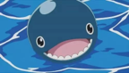

人际关系 |
简介 |
伦巴海贼团由船长斑彪约基所率领，充满西部牛仔风味出身西海的海贼团，团员擅长演奏乐器，于50年前在魔鬼三角地带被其他海贼团歼灭。布鲁克是唯一现存船员。海贼旗是一个有牛角的骷髅头，海贼船名称不明，船头为牛头骨造型。口号是：让哭泣的孩子也破涕为笑。 |
|
|  |
拉布世界上最大的岛屿鲸鱼，前额有伤疤和路飞绘制的草帽海贼团标志。是一头有感情的鲸鱼，与布鲁克有很深的羁绊。 |